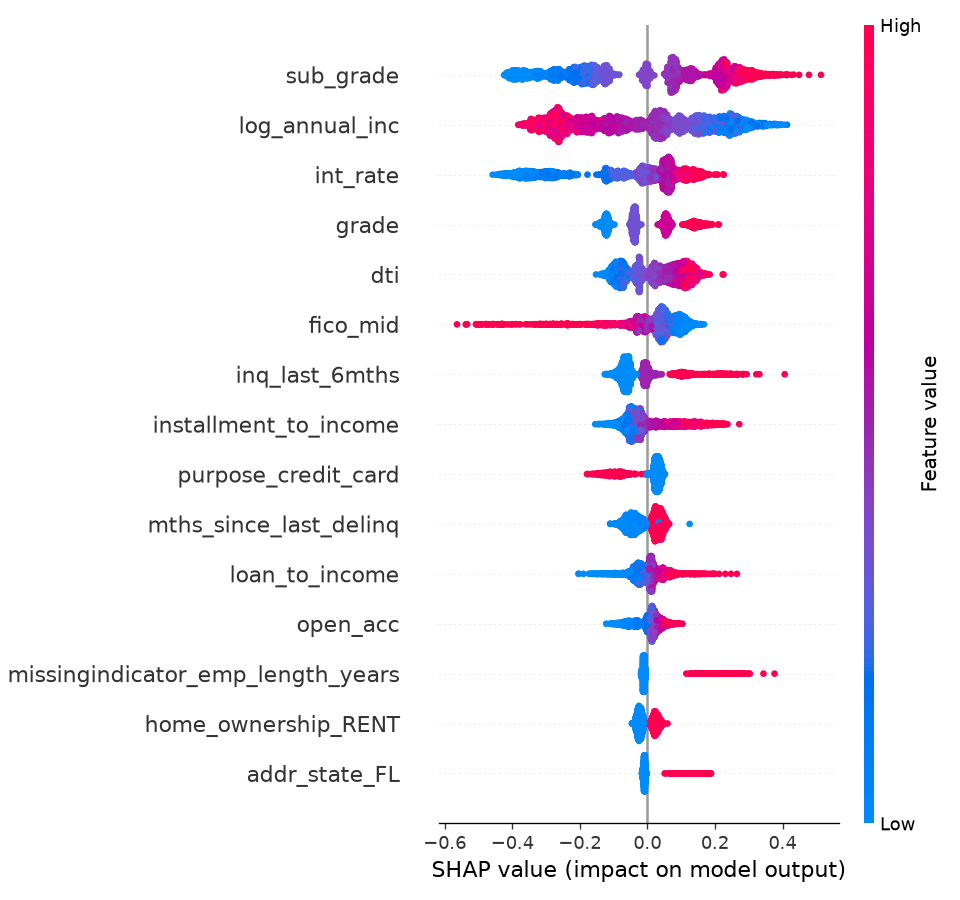
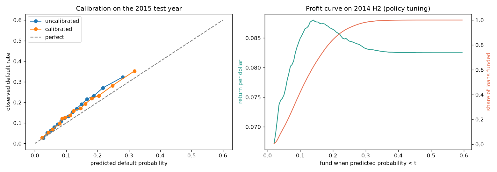
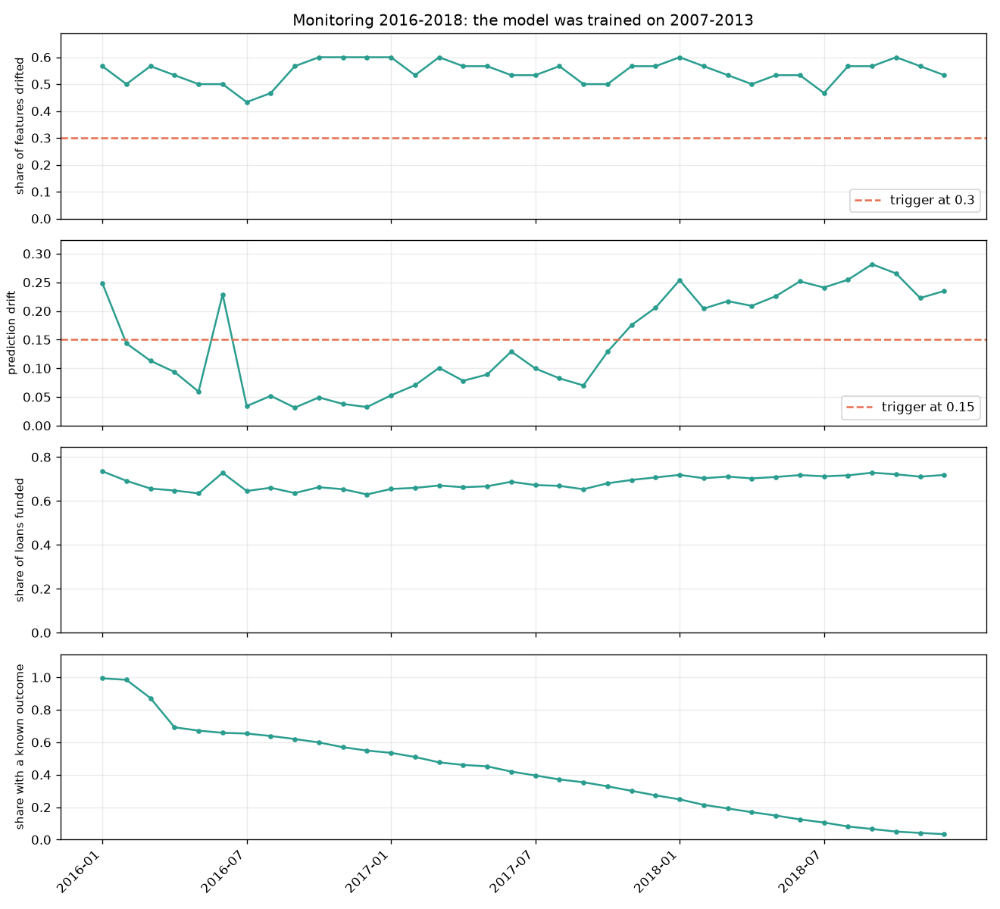

A complete walkthrough · Lending Club 2007 to 2018
The Lending Club
Credit Book
A machine learning system that decides which peer-to-peer loans to fund, and the reasoning behind every choice in it. Why accuracy is the wrong metric. Why a model trained on 2013 data was already stale by January 2016.
- Business result
- +7.35¢returned per dollar invested, against +6.55¢ for funding everything
- Model quality
- 0.683ROC-AUC on 2015, scored exactly once
- Loans monitored
- 988,585issued 2016 to 2018, replayed as 36 monthly batches
- Input drift
- 43 to 60%of features drifted in every single month
Part 00Orientation
This is a guide to a complete machine learning system: not only a model, but the machinery around it that makes the model trustworthy enough to act on. It assumes you know roughly what a classifier is and nothing beyond that.
The project answers one question. An investor on a peer-to-peer lending platform sees a list of loans. Each shows an amount, an interest rate, a grade the platform assigned, and a profile of the borrower. Some will be repaid with interest. Some will default. Which should the investor fund?
That sounds like a classification problem, and for the first ten minutes it is. The interesting parts sit elsewhere. Most of the columns in the raw data would let you cheat. The obvious metric is worthless here. A default does not lose all your money. The right answer turns out not to be "reject bad loans" at all. And once the model is deployed you cannot tell whether it still works, because the answer arrives three years late.
How to read this
Three routes through
- For the ideas, read parts 01, 03, 05 and 08. Money as the metric, the four kinds of leakage, turning a probability into a decision, and monitoring a model whose labels arrive years late. These transfer to other problems.
- For the engineering, read parts 06, 07 and 10. How a model becomes a service, what makes retraining safe, and what each tool in the stack does.
- To evaluate the work, start at part 11, an adversarial audit of the finished project and the real defects it found. Then part 09, which holds the one decision still deliberately left open.
The shape of the system
Everything below hangs off this diagram. The left column is the reproducible pipeline that turns a raw CSV into a deployable artifact. The right side is what happens to that artifact once it exists.
%%{init:{'theme':'base','themeVariables':{'primaryColor':'#EAF1EF','primaryTextColor':'#101C19','primaryBorderColor':'#0E6E62','lineColor':'#5C6B66','secondaryColor':'#F1F4F3','tertiaryColor':'#FCFDFC','fontFamily':'IBM Plex Mono, monospace','fontSize':'12px'}}}%%
flowchart TB
CSV[("Raw CSV
2.26M loans · 1.68 GB")]
subgraph PIPE["Reproducible pipeline: one command, dvc repro"]
direction TB
A["ingest
keep only allowlisted columns"]
B["prepare
row-level features · label · maturity filter"]
C["split
by issue date · schema validation"]
D["train
3 model families · time-based CV · MLflow"]
E["evaluate
calibrate · tune policy · score test once"]
F["package
model + calibrator + threshold + economics"]
A --> B --> C --> D --> E --> F
end
subgraph OPS["Operations"]
direction TB
G["FastAPI + Docker
/predict"]
H["monitoring
36 monthly batches · drift"]
I["trigger
persistent drift, then retrain"]
J["Prefect flow
full retrain"]
K["promotion gate
judged in dollars"]
H --> I --> J --> K
end
CSV --> A
F --> G
F --> H
K -.->|"only if better"| F
package is the unit that gets served, monitored and audited. Nothing downstream ever loads a bare model.Part 01Why the metric is money
What peer-to-peer lending is
Lending Club connected borrowers who wanted a personal loan with investors who wanted to lend. A borrower applies. The platform runs its own underwriting, approves or rejects, and for approved loans assigns a grade from A to G with an interest rate to match. Grade A loans are the safest and pay the least interest. Grade G loans are the riskiest and pay the most.
The approved loan is then listed. Investors browse the listings and choose which to put money into. A loan runs for a fixed term, and this project covers 36-month loans. During that term the borrower makes a fixed monthly payment called the installment. If they pay to the end, the investor gets their principal back plus interest. If they stop paying, the loan is eventually charged off, and the investor keeps whatever was recovered.
The model never sees a rejected applicant. Every loan in the data already passed Lending Club's underwriting. So this system cannot answer "should this person get credit?" It answers "of the loans already approved and priced, which are worth buying?" That distinction runs through the whole project, and it is the first thing stated in the model card.
Accuracy measures the wrong thing
About 86% of the loans in this dataset were repaid. So a model that predicts "never defaults" for every loan is 86% accurate and completely useless, because it gives the investor no way to tell loans apart.
This is the standard problem with imbalanced classification. When one outcome is much more common than the other, accuracy rewards you for ignoring the rare one, and the rare one is the point.
Even a good accuracy number would not answer the investor's question. Consider two mistakes. Fund a loan that defaults and you lose part of your money. Decline a loan that would have repaid and you lose the interest you would have earned. Those are not equally bad, and how bad each one is depends on the loan's amount and interest rate. A classification metric treats every error as one unit of wrong. An investor counts dollars. So the project's headline metric is realized return per dollar invested.
What a default actually costs
A default does not lose all your money. When a Lending Club loan is charged off, the borrower has usually made payments for a while, and some further amount is recovered afterwards. Measured on this dataset's training loans:
| Quantity | Value | What it means |
|---|---|---|
| Loss given default (LGD) | 0.3657 | A charged-off loan loses about 37% of the funded amount. It still returns roughly 63%. |
| Prepayment factor | 0.8288 | A repaid loan returns only 83% of the interest the contract promised, because borrowers pay off early, often by refinancing. |
Both numbers matter. Assume a default loses 100% of the money and you will be far too cautious, declining profitable loans. Assume a repaid loan pays the full contractual interest and you will overestimate every return by about 17%.
Both constants are dollar-weighted: total dollars lost divided by total dollars lent, not the average of per-loan ratios. A portfolio's return is decided by dollars, so a $35,000 loan has to count more than a $1,000 one. The two methods genuinely disagree here. The per-loan average puts LGD at 0.3732, the dollar-weighted figure at 0.3657, because smaller loans default somewhat more often.
The bridge from probability to dollars
A classifier outputs a probability. An investor needs a decision. Expected value connects them:
E[return] = (1 - p) x gain_if_repaid - p x loss_if_default
where gain_if_repaid = (installment x term - amount) x 0.8288
loss_if_default = 0.3657 x amount
p = the model's predicted default probabilityThis one equation explains why the rest of the project looks the way it does. The decision multiplies by the predicted probability, so the probability has to be right in value, not merely ranked correctly. A model that confidently says 2% when the truth is 20% wrecks the arithmetic even if it ranks every loan in the correct order. That requirement drives the choice of training metric and forces an extra calibration step, both covered in part 04.
Part 02The data, and what was thrown away
The source is accepted_2007_to_2018Q4.csv: 2,260,702 loans, 1.68 GB, 151 columns, from a public Kaggle mirror of Lending Club's own release. The file's SHA-256 is recorded in the project so anyone can confirm they have the same data.
Of those 2.26 million loans, the project uses 621,022. Understanding why three quarters were discarded is most of the work of this part.
Filter one: only loans with a known outcome
A loan's loan_status can be Fully Paid, Charged Off, Default, Current, In Grace Period, or various stages of Late. Only the first three are final. A loan still marked Current has no label, since nobody yet knows how it ends, so it cannot be used for supervised training.
The target is defined accordingly. Charged Off and Default become 1, Fully Paid becomes 0, and everything else is dropped.
The code raises an error if it meets a status value it has never seen. If Lending Club ever republished the data with a new status, a naive filter would silently drop those loans and nobody would notice the dataset had shrunk. Failing loudly forces a human to classify the new value deliberately.
Filter two: only loans old enough to have finished
This filter is the subtle one, and getting it wrong produces a classic mistake called survivorship or maturity bias.
The dataset is a snapshot taken at the end of 2018. A 36-month loan issued in June 2018 has only been running six months by then. It cannot possibly be Fully Paid yet. The only way it has a final status is if it ended early, which for a young loan almost always means it was charged off.
Keep recent loans and your labelled sample is quietly poisoned. The recent portion contains defaults but almost no successes. A model trained on it learns that recent loans are catastrophically risky, which is an artifact of the calendar rather than anything about credit.
The project measured this rather than assuming it:
| Issued in | Unresolved | Usable for training? |
|---|---|---|
| 2015 | 0.05% | Yes. Essentially all matured. |
| 2016 | 28% | No. Badly biased. |
| 2017 | 60% | No. |
| 2018 | 88% | No. |
The cutoff is therefore December 2015. Everything issued afterwards is excluded from training, and later put to a different use entirely as simulated production traffic for drift monitoring in part 08.
Why the split is by date
A random train/test split would let the model learn from 2013 loans and be scored on 2010 loans. That is impossible in production, since you cannot train on the future, and it makes results look better than they are, because the model gets to see the economic conditions of the period it is being tested on.
Splitting by issue date simulates reality. Train on the past, predict the future. It also makes the test harder and the resulting number smaller, which is the point.
Scikit-learn ships a TimeSeriesSplit that looks made for this. It is not used, because it splits by row count rather than by calendar. Lending Club's volume grew enormously over the period, so equal-sized row chunks would carve 2007 to 2011 into a single fold and slice 2014 into several. The project writes its own splitter so each fold is a real calendar year.
What a loan looks like to the model
Twenty-nine raw columns are permitted as inputs. A few of them are replaced by derived versions, and the final set the model receives is 30 columns, which encoding then expands into 73 numeric features. The derived features are worth naming, because each one encodes a piece of domain judgement:
| Feature | Built from | Why |
|---|---|---|
fico_mid | FICO low and high | FICO is reported as a 4 to 5 point band. The midpoint carries the same information in one column instead of two nearly identical ones. |
credit_history_months | issue date minus earliest credit line | Uses the issue date rather than today's date, so the feature is point-in-time correct. |
loan_to_income | loan amount over income | $20,000 means something different to a $40k earner and a $400k earner. The ratio carries the burden. |
installment_to_income | installment x 12 over income | The monthly squeeze, which is what actually causes missed payments. |
emp_length_years | "10+ years" becomes 10 | Employment length is ordered, so it stays a number. One-hot encoding would throw the ordering away. |
Missing values: three kinds, three treatments
Beginners are usually taught to fill missing values with the median. That is right about a third of the time. This project distinguishes three cases.
Ordinary missing. The value exists but was not recorded. Fill with the median learned from the training fold only.
Structurally missing. mths_since_last_delinq is blank when the borrower has never been delinquent. That is not absent data, it is the most informative value in the column. Filling it with the median would claim the borrower was delinquent an average amount of time ago, which is false. Instead it gets a sentinel far outside the real range, 999, which tree models can split on cleanly.
Missing as a signal. For three columns, whether the value is missing predicts default on its own. emp_length_years is 4.3% missing, and those loans default at 18.2% against 12.4%. pub_rec_bankruptcies is 0.8% missing, 24.5% against 12.5%. revol_util is 0.1% missing, 16.9% against 12.6%. These get the median and an extra 0/1 column recording that they were missing.
Scikit-learn's SimpleImputer silently drops a column that is entirely missing in the data it is fitted on. If that happened in one cross-validation fold, the number of features would change between folds and a served model would break. Fixed with keep_empty_features=True.
Similarly, SimpleImputer(add_indicator=True) only creates a "was missing" column for columns that actually contained a missing value during fitting. In a fold with none, the column vanishes, which is the same trap wearing a different hat. Fixed by using MissingIndicator(features="all"), which always produces the column.
Part 03Four ways to cheat
Data leakage is when information reaches the model that it would not have at the moment of the real decision. It is the most common way a machine learning project produces an impressive number that means nothing. This project defends against four distinct kinds.
1. Target leakage, or the columns that describe the future
The raw file has 151 columns. Most of them are recorded after the investor's decision:
| Column | What it records | Available at listing? |
|---|---|---|
total_pymnt | Total paid so far | No. Known only after the loan runs. |
recoveries | Money recovered after charge-off | No. Only exists because it defaulted. |
last_pymnt_d | Date of last payment | No. |
last_fico_range_high | Most recent credit score | No. Updated during the loan. |
debt_settlement_flag | Whether a settlement was agreed | No. Implies default. |
int_rate | The rate the platform set | Yes. Shown on the listing. |
Including recoveries would produce a model with near-perfect accuracy, because a non-zero recovery is a default. It would also be worthless, since at decision time that column is always empty.
An allowlist rather than a blocklist
- Decision
- Name the 29 columns that are permitted. Everything else is dropped at ingestion and can never reach the model.
- Why
- A blocklist requires you to think of every dangerous column. If the dataset gains a column, or you overlook one, it silently becomes a feature. With an allowlist, a new column is excluded by default and you have to add it deliberately. Safety should be the state you get by doing nothing.
- Enforced by
- Four separate tests, plus a list of forbidden name prefixes checked at several pipeline stages.
2. Preprocessing leakage, the invisible kind
This one catches careful people. Suppose you fill missing incomes with the median income. Compute that median over the whole dataset before splitting, and the median now contains information from your test loans, which then flows into the training data. The same applies to percentile caps, category frequencies and scaling factors.
The effect is small per statistic and invisible in the code. It reliably inflates results.
The project solves this structurally by dividing every transformation into two layers:
%%{init:{'theme':'base','themeVariables':{'primaryColor':'#EAF1EF','primaryTextColor':'#101C19','primaryBorderColor':'#0E6E62','lineColor':'#5C6B66','fontFamily':'IBM Plex Mono, monospace','fontSize':'12px'}}}%%
flowchart LR
R[Raw loan row] --> LA
subgraph LA["LAYER A: safe before the split"]
direction TB
A1["parse ' 36 months' to 36"]
A2["FICO low and high to midpoint"]
A3["issue date minus credit line"]
A4["amount over income"]
end
LA --> SP{{"train / validation / test
split by date"}}
SP --> LB
subgraph LB["LAYER B: must be fitted"]
direction TB
B1["median imputation"]
B2["99.5th percentile cap"]
B3["category frequencies"]
B4["standard scaling"]
end
LB --> M["73 features, then the model"]
Pipeline that cross-validation refits on every fold.This works because Pipeline makes the correct behaviour automatic instead of a matter of discipline. When cross-validation calls fit on a fold, every learned statistic inside the pipeline is recomputed from that fold's training rows alone. You cannot forget.
A test called test_cv_never_fits_on_its_own_validation_rows plants a fake estimator that records exactly which rows it was fitted on, runs cross-validation, and asserts that no validation row ever appeared in a training call. A machine checks the guarantee, rather than a human reading the code carefully.
3. Temporal leakage, or training on the future
Part 02 covered this: all splits are by issue date. It applies to cross-validation too. The folds expand forwards in time, as Exhibit 2 shows, and a fold never validates on a year earlier than its training data.
4. Evaluation leakage, or reusing the test set
Look at the test result, adjust something, look again, and the test set has become a tuning set. Its number no longer estimates performance on unseen data. It estimates performance on data you have been quietly optimising against.
The project's rule is that 2015 is scored exactly once, at the very end. Everything that shapes the model, including hyperparameters, the calibrator and the funding threshold, is chosen on 2014.
That rule started as a convention maintained by reading the code carefully. An audit later flagged it as the weakest link, and it was made structural:
Policy tuning cannot reach the test year
- Decision
- Calibration and threshold selection moved into a function
tune_policy()that receives the calibration and tuning frames by name and is never handed the test frame. - Why
- Previously everything sat in one scope alongside the test predictions, so "scored once" held because nobody made a mistake. Now a leak would have to be added deliberately. The most important claim in the project was the only one with no structural support.
Part 04Modelling and honest validation
Start with baselines you have to beat
Before any model, the project establishes what "no model" looks like. There are two baselines. The first is Lending Club's own grade, turned into a classifier that predicts each grade's historical default rate. This is the real competitor, since the platform already did risk assessment, and a model that cannot beat it adds nothing. The second is funding everything, which is the return an investor gets by buying every listed loan.
Without these, a return of +7.35¢ per dollar is a number floating in space. With them it becomes a claim about doing better than the obvious alternatives.
The metric that gets optimised
| Metric | Measures | Verdict |
|---|---|---|
| Accuracy | Share of correct labels | Rejected. "Never defaults" scores 86%. |
| ROC-AUC | Whether risky loans rank above safe ones | Reported, not optimised. Ranking is necessary but not sufficient, since it is blind to whether "0.2" really means 20%. |
| Log loss | How well-calibrated the probabilities are in value | Optimised. Punishes confident mistakes severely, which is exactly what breaks the expected-value equation. |
| Brier score | Squared error of probabilities | Reported as a second calibration check. |
| PR-AUC | Ranking quality for the minority class | Reported, since it is more informative than ROC-AUC under imbalance. |
The logic chain is short. The funding rule multiplies by p, so p has to be accurate in value, so the training metric has to punish miscalibration. That gives log loss.
Class imbalance, and what was deliberately not done
With 14% defaults, the standard advice is to oversample the minority class with SMOTE or set class_weight="balanced". The project does neither, and this is one of its more instructive decisions.
No resampling, and class_weight=balanced deleted from the search
- Decision
- Train on the natural class distribution. Handle imbalance through the choice of metric and through calibration, rather than by altering the data.
- Why
- Reweighting deliberately distorts the predicted probabilities away from the true base rate. That is fine if you only need ranking, and fatal here, because the profit calculation consumes the probability directly. Measured:
balancedscored 0.632 log loss against 0.353, a catastrophic degradation. - Why removed rather than kept
- It wasted half the logistic regression search budget on every run, and left a trap. Under a ranking metric like AUC it is not penalised, so a future change of tuning metric would have quietly selected it.
The two models
Logistic regression is the interpretable baseline. It fits a weighted sum of the features and squashes it into a probability. It needs scaled inputs so its penalty applies evenly, and one-hot encoded categories, and it cannot represent interactions unless you build them by hand.
LightGBM is a gradient-boosted decision tree ensemble. It builds hundreds of small trees, each correcting the previous ones' errors. It finds interactions automatically, ignores feature scale, and handles the mix of numeric and categorical data well. It is also far more capable of overfitting, which is why the validation design matters.
Hyperparameters are chosen by randomised search, meaning 20 random combinations rather than the full grid. A full grid over 7 settings would be thousands of fits. Random sampling finds a nearly as good configuration for a fraction of the compute, because only a few of the settings matter much.
Calibration, or making 0.2 mean 20%
Models trained for ranking are often miscalibrated. They separate risky from safe correctly while the numbers themselves are systematically off. Since the profit equation consumes the number, this has to be fixed.
The fix is isotonic regression, a flexible monotone mapping from raw score to observed frequency, fitted on held-out 2014 loans. Monotone means it never reorders anything. It only stretches and compresses the scale.
Isotonic regression is a step function. On the 283,026 test loans it produced only 255 distinct probability values, and one of those steps contained 39,792 loans, all assigned exactly the same probability.
That is fine for reading a probability. It is dangerous for a threshold rule, because a cut-off landing inside such a block moves 14% of the portfolio at once, and which loans get funded is then decided arbitrarily.
So ranking policies use the raw model score, which is continuous, and the policy degrades smoothly. The calibrated probability is used only where a true probability is required: the expected-value arithmetic and human-readable output.
Results, and an honest reading of them
| Model | Log loss | ROC-AUC | PR-AUC | Brier | Configs tried |
|---|---|---|---|---|---|
| Lending Club grade (baseline) | 0.36015 | 0.6232 | 0.1663 | 0.10473 | 1 |
| Logistic regression | 0.35345 | 0.6618 | 0.2048 | 0.10331 | 3 |
| LightGBM | 0.35172 | 0.6672 | 0.2079 | 0.10300 | 20 |
A first draft of this project stopped there and declared LightGBM the winner. An audit called that out, for a reason worth absorbing.
The gap between LightGBM and logistic regression is 0.00173 log loss. The spread between folds is 0.026, fifteen times larger, because 2011, 2012 and 2013 are genuinely different years. Comparing two averages tells you nothing when the year-to-year variation dwarfs the difference you are claiming.
Both models see identical folds, so that variation is common to both, and the right comparison is paired, fold by fold:
| Validation year | 2011 | 2012 | 2013 | Verdict |
|---|---|---|---|---|
| LightGBM | 0.31888 | 0.38146 | 0.35481 | |
| Logistic regression | 0.32006 | 0.38156 | 0.35873 | |
| Difference | +0.00118 | +0.00010 | +0.00392 | Wins 3 of 3, mean +0.00173 with SD 0.00197 |
LightGBM does win every fold, which is a real result. But the variation in its margin is as large as the margin itself, and it received nearly seven times the hyperparameter search budget, which biases the comparison in its favour. The honest summary is that it is consistently ahead by a little, not decisively better. Per-fold scores are kept in the report so anyone can check rather than take it on trust.
On the 2015 test year, scored once: log loss 0.3992, ROC-AUC 0.6834, Brier 0.1206.
For consumer credit, yes. This is a realistic number. If a loan-default model reports 0.95, the overwhelmingly likely explanation is leakage rather than brilliance. Human financial behaviour is only so predictable from an application form, and a modest, honest number is a sign of a correctly built pipeline.

sub_grade and int_rate. It is largely refining the platform's pricing rather than replacing it, which is an honest description of what it does.Part 05From probability to decision
The finding that reshaped the project
Apply the expected-value rule, funding whenever E[return] is above zero, and it funds 99.88% of all loans.
The reason is that Lending Club priced the loans. A grade-G borrower pays 25% or more in interest precisely because they are likely to default, and the rate is set so that the expected value is positive anyway. At these rates almost every loan is worth funding in isolation.
The model's value is not in rejecting negative-value loans, because there are barely any. Its value is ranking under a capital constraint. If you have $1M and there are $10M of loans, which do you buy? That reframing changes what the model is for and how it should be evaluated.
So the deployed rule is a tuned threshold: fund when the raw risk score is below a cut-off chosen to maximise return per dollar. That cut-off, selected on the second half of 2014, is 0.14, which corresponds to a calibrated default risk of about 14.6%.
%%{init:{'theme':'base','themeVariables':{'primaryColor':'#EAF1EF','primaryTextColor':'#101C19','primaryBorderColor':'#0E6E62','lineColor':'#5C6B66','fontFamily':'IBM Plex Mono, monospace','fontSize':'12px'}}}%%
flowchart TB
L["Loan listing
29 raw fields"] --> V{"valid?
fields consistent
with each other"}
V -->|no| X["HTTP 422
rejected, not scored"]
V -->|yes| P["pipeline
73 features"]
P --> S["raw risk score"]
P --> C["calibrated probability"]
S --> T{"score below 0.14 ?"}
C --> E["expected return in $
(1-p)·gain - p·loss"]
E --> T2{"expected return above 0 ?"}
T -->|no| D1["DECLINE
score_above_threshold"]
T -->|yes| T2
T2 -->|no| D2["DECLINE
negative_expected_return"]
T2 -->|yes| F["FUND
score_below_threshold"]
Comparing fairly with equal selectivity
Any selection policy can look better by being pickier. Fund only the safest 5% of loans and your return per dollar will look wonderful, and you will have deployed almost no capital, which is not a usable strategy.
So every comparison is also run at matched selectivity. Force the model to fund exactly the same share of loans as the grade A to B rule, then compare returns. That isolates whether the model is better at choosing from whether it is simply more conservative.
| Strategy | Share funded | Return / $ | Per $1B | Defaults among funded |
|---|---|---|---|---|
| Fund everything | 100% | +0.0655 | $65.5M | 14.9% |
| Lending Club grade A to B | 57.2% | +0.0718 | $71.8M | 9.1% |
| Logistic regression | 69.9% | +0.0722 | $72.2M | 10.9% |
| LightGBM, tuned threshold | 66.3% | +0.0735 | $73.5M | 10.0% |
| Logistic regression, matched to A to B | 59.8% | +0.0732 | $73.2M | 9.4% |
| LightGBM, matched to A to B | 58.0% | +0.0738 | $73.8M | 9.0% |
Read the last two rows against the grade rule. At essentially the same selectivity, the model earns more and defaults less.
Is the edge real, or luck?
A point estimate cannot tell you. A gap of 0.002 per dollar could easily be noise on a different set of loans. So each comparison is bootstrapped: resample the test loans with replacement 1,000 times, recompute both returns each time, and look at the distribution of the difference.
| Comparison | Difference | 95% CI |
|---|---|---|
| LightGBM against fund everything | +0.0080 | [+0.0072, +0.0087] |
| LightGBM against grade A to B | +0.0021 | [+0.0015, +0.0027] |
| Logistic regression against grade A to B | +0.0015 | [+0.0008, +0.0022] |
| LightGBM against logistic regression | +0.0006 | [+0.0001, +0.0011] |
Read that last row honestly. LightGBM's edge over a plain logistic regression is small, with an interval that nearly touches zero. The gap that matters is model against no model, which is four times larger.
These intervals measure sampling noise within one test year. They say nothing about a different credit cycle, which is the far larger risk and cannot be estimated from this data at all.

Part 06Serving: the bundle
Why shipping "the model" is not enough
A trained estimator is only one of four things needed to reproduce a funding decision, and they were produced at different stages from different data:
| Component | Fitted on | If it goes missing |
|---|---|---|
| Preprocessing and model | 2007 to 2013 | No predictions at all |
| Calibrator | 2014 H1 | Probabilities are wrong in value, so the profit maths breaks |
| Funding threshold | 2014 H2 | No decision rule |
| LGD and prepayment | Training loans | Expected returns are wrong |
Ship these separately and production drifts out of sync with the report, because someone updates the model and forgets the threshold. Bundled into one artifact, the service either has a complete, consistent decision or it has nothing.
Training and serving skew, and the one function that prevents it
The API asks callers for raw listing fields. It never asks for fico_mid or credit_history_months. A caller cannot reasonably be expected to know what those mean, and if they computed them slightly differently, say by dividing credit history days by 30 instead of 30.44, the model would silently score garbage.
So both the training pipeline and the API call the same function, derive_features(). Skew is not merely unlikely, it is structurally impossible.
200 real 2015 loans were scored both offline and through the running container. The maximum difference in predicted probability was 4.94 x 10⁻⁷, and all 200 decisions were identical.
Validating input like a loan, not like a form
An early version of the API accepted anything structurally well-formed. An audit found three ways to get a confident answer out of nonsense, all since fixed:
| Sent | Before | Now |
|---|---|---|
home_ownership: "MORGAGE" (typo) | 200 and a confident score | 422 |
| FICO low 800, high 400 | 200, silently uses 600 | 422 |
| $12,000 at 11.99% with a $14.77 installment | 200, "fund" beside -$13,066 | 422 |
addr_state: "ND" (never in training) | 200 | 200, deliberately |
That last row is the interesting one. North Dakota genuinely never appears in the training window. Rejecting it would turn a legitimate application into a client error. So states validate against the 51 real USPS codes rather than against the training data, and a real state the model has not seen becomes a business event for the drift monitor to report.
The $14.77 on $12,000 example is not hypothetical hostility. Checking the amortization formula against the stated installment across all 621,022 loans, it matches to within 0.01% for 99% of them, but 1,015 loans (0.16%) are off by more than 1%. One lists a $14.77 monthly payment on $6,000 at 6.89%, where the true payment is $185.
Those rows produced decision: "fund" beside an expected return of -$13,066. The validation that now rejects them also immediately failed one of the project's own tests, which had been raising an interest rate without updating the installment, passing for weeks against an internally impossible loan.
The container
The Docker image is multi-stage. A builder stage installs dependencies, then only the resulting environment and the application code are copied into a clean runtime image, so the build tools never ship. It runs as a non-root user, declares a HEALTHCHECK, and carries 36 packages rather than the roughly 200 the training environment needs. MLflow, DVC, SHAP and the plotting libraries all sit in a separate optional dependency group that the image never installs.
Part 07Automation and the promotion gate
Retraining on a schedule is dangerous without a gate
Models go stale, so teams schedule retraining. The failure mode is that a bad training run reaches production silently. The pipeline succeeded, every task was green, and the model is worse.
A promotion gate, judged in dollars, on validation data
- Decision
- A retrained model replaces the live one only if it improves return per dollar by more than a 0.0005 margin, measured on validation data.
- Why money
- A model can improve its log loss and still pick a worse portfolio. The gate should judge the thing you actually care about.
- Why a margin
- Swapping production for a 0.00001 improvement is churn on noise, and every swap carries real risk.
- Why never the test year
- A gate that consulted the test set on every retrain would erode it into another tuning set, and the headline result would slowly stop meaning anything.
%%{init:{'theme':'base','themeVariables':{'primaryColor':'#EAF1EF','primaryTextColor':'#101C19','primaryBorderColor':'#0E6E62','lineColor':'#5C6B66','fontFamily':'IBM Plex Mono, monospace','fontSize':'12px'}}}%%
flowchart TB
T["retrain: ingest, prepare, split, train, evaluate"] --> CB["candidate bundle"]
CB --> SC["score candidate on 2014 H2
return per dollar"]
CH["champion, currently live"] --> SC2["score champion on the same loans"]
SC --> G{"candidate minus champion
above 0.0005 ?"}
SC2 --> G
G -->|yes| PR["PROMOTE
candidate becomes live"]
G -->|no| RJ["REJECT
champion stays"]
Continuous integration on data nobody has
CI runners have no access to a 1.68 GB dataset. Running only unit tests would prove that every part works, but not that the parts fit together.
The solution is synthetic loans with planted risk. A generator produces loans whose default probability genuinely depends on grade, FICO and loan-to-income. CI then runs the real code end to end over them, cleaning, labelling, splitting, preprocessing, training, calibrating, choosing a policy, bundling and serving over HTTP, then asserts the model reaches AUC above 0.60 on the planted signal. It takes under two seconds and catches wiring mistakes that unit tests cannot see.
The demo-bundle builder, run locally, silently overwrote the real trained bundle with one fitted on synthetic data. The API kept working perfectly, returning confident answers from a toy model. The fix was a guard that refuses to overwrite an existing bundle without an explicit --force. CI starts from a clean checkout so the guard never fires there, and locally it prevents a failure that would be very hard to notice.
Part 08Monitoring when labels arrive late
This is the most transferable idea in the project. A 36-month loan funded today reveals whether it was a good decision in three years, and waiting is not a monitoring strategy.
The setup
The 988,585 loans issued between 2016 and 2018, deliberately excluded from training, are replayed as 36 monthly production batches. Each is scored by the deployed bundle exactly as the API would score it.
Why the visible labels are a trap
Some of those loans do have final outcomes, and it is tempting to score the model on them. That would be a serious mistake.
A loan issued in June 2018 can only have finished by the 2018Q4 snapshot if it ended early, either paid off ahead of schedule or charged off in its first months. The loans you can see are the least representative ones.
| Batch | Outcome known | Observed default rate |
|---|---|---|
| 2016-01 | 99% | 14.3% |
| 2016-06 | 66% | 20.5% |
| 2018-12 | 3% | 12.6% |
Nothing about the model or the world changed to produce that swing. Only the amount of elapsed time did. Charted on a dashboard it would look exactly like a model failing and then recovering. So label coverage is reported as context and never used as a quality metric.
What gets watched instead
Two things are visible immediately: the inputs, meaning whether incoming applications still resemble training data, and the model's own output, meaning whether the score distribution is moving.

Measuring drift so the months stay comparable
The statistical test is pinned, and drift is measured on raw inputs
- Decision
- Wasserstein distance for numeric columns, Jensen-Shannon for categorical, threshold 0.15, applied to the 30 raw model inputs.
- Why pinned
- Left to choose, Evidently picks a test based on sample size, using a distance test for large samples and a p-value test for small ones. A 45,000-loan month and a 900-loan month would then be measured with different tests running in opposite directions, where high means drift in one and low means drift in the other, and the monthly series would not be comparable at all.
- Why raw inputs
- A transformed column is partly an artifact of the fitted preprocessor, and "feature 47 drifted" is not actionable, while "income verification mix changed" is. A test asserts the monitored set equals the model's input set, so a feature cannot be added without being watched.
From a number to a decision
A drift figure on a dashboard is not yet a decision. The trigger turns the monthly reports into one of three outcomes: do nothing, retrain, or call an engineer.
%%{init:{'theme':'base','themeVariables':{'primaryColor':'#EAF1EF','primaryTextColor':'#101C19','primaryBorderColor':'#0E6E62','lineColor':'#5C6B66','fontFamily':'IBM Plex Mono, monospace','fontSize':'12px'}}}%%
flowchart TB
B["monthly batch"] --> Q{"data quality:
missing jump, or
unseen category?"}
Q -->|yes, and new| I["ALERT: investigate
an engineer, not a retrain"]
Q -->|already known| SU["suppressed
reported once, not monthly"]
B --> D{"drift share above 0.30
or prediction drift above 0.15?"}
D -->|no| OK["clean, reset the run"]
D -->|yes| R{"2 consecutive
months?"}
R -->|no| W["wait, one month
is often an artifact"]
R -->|yes, first time| RT["ALERT: retrain"]
R -->|yes, already fired| SU2["suppressed
one alert per episode"]
Persistence is required because a single month is often an artifact, whether a marketing push, a holiday, or a product change that reverts. Requiring the same breach in consecutive months trades a month of delay for far fewer false alarms. Retraining is not free either, since it consumes the promotion gate and every model swap carries risk.
The two alert types are separate because retraining fixes a world that has moved. It does not fix a column that suddenly arrives empty, and firing "retrain" at a broken feed would train the next model on the same broken data. Different problem, different owner, different urgency.
The first version of the trigger produced 37 alerts across 36 months. The same "addr_state has a new value: ND" fired every single month for three years.
An alert that fires every month is a log line, and a page people learn to ignore is worse than no page at all. Adding suppression, so that a new category is permanent knowledge reported once and a retrain fires once per episode, took it from 37 alerts to 3.
What the monitoring found
| Signal | Result |
|---|---|
| Share of model inputs drifted against training | 43 to 60%, in every single month |
| Prediction drift | 0.03 rising to 0.28, breaching from 2017-12 |
| Share of loans funded | Stable, 0.63 to 0.73 |
| Alerts raised | 3: one retrain, two investigate |
The headline is that a model trained on 2007 to 2013 was already operating on a materially shifted population by January 2016. The two investigate alerts are real findings: addr_state=ND and home_ownership=ANY, values that never appear in the training window. Neither breaks the service, and both are worth knowing about.
Part 09Fairness, and one open decision
The dataset contains no protected attributes, no race, sex or age, so disparate treatment cannot be measured directly. What can be measured is whether outcomes differ across addr_state, a well documented proxy for race and income in the US.
A model card that merely asserts "state may be a proxy" is box-ticking. This one measures it.
Finding 1: funding rates differ sharply by state
Against an overall funding rate of 66.3%, the spread runs from 47.8% in Nevada to 74.0% in Massachusetts, a gap of 26 points.
Finding 2: a big gap is not automatically a problem
Some groups genuinely are riskier, and a funding gap that reflects real risk is the model doing its job. The question is whether the gap is earned. Comparing the correlation between each group's mean predicted score and its actual default rate:
| Grouped by | Funding-rate spread | Score against actual outcome |
|---|---|---|
purpose | 14.2% (small business) to 82.0% (credit card) | +0.94 |
home_ownership | 58.1% (rent) to 75.2% (mortgage) | +1.00 * |
addr_state | 47.8% (NV) to 74.0% (MA) | +0.51 |
* Only three groups, so a correlation of 1.00 across three points is nearly meaningless. Shown for contrast, not as evidence.
purpose spreads far wider than addr_state, with small-business loans funded at 14% and credit-card refinancing at 82%, and that spread is almost entirely explained by real differences in default. addr_state spreads less and is explained half as well.
Finding 3: the model is not equally right about each state
Among loans the policy funded, the realized default rate ranges from 5.8% in Oregon to 14.3% in Arkansas, against 10.0% overall. The stated 14.6% risk bar means something materially different depending on where the borrower lives.
Finding 4: the feature earns none of it
addr_state carries just 1.6% of total SHAP weight. Refitting the selected model without it entirely:
| Log loss | ROC-AUC | |
|---|---|---|
With addr_state | 0.37692 | 0.6769 |
Without addr_state | 0.37693 | 0.6770 |
A difference of 0.00001 log loss, with AUC fractionally better without it.
addr_state is a proxy that earns nothing
- Recommendation
- Remove it. A feature that is a recognised proxy for protected characteristics, produces a 26-point funding spread and a 2.5x spread in realized error, and contributes no measurable predictive value, does not belong in a credit model.
- Why still open
- It is a modelling change rather than a documentation one. It invalidates every published number, the deployed bundle and the monitoring baseline, so it is the owner's call, not something to slip into a documentation phase.
- Revisit if
- The model is ever used for anything resembling an approval decision. At that point this stops being a recommendation.
This is the only entry in the project's 80-decision log marked Open, deliberately. A model card that documents a known issue with measurements and an explicit recommendation is more credible than one with nothing open, because it shows someone looked.
Part 10The MLOps toolkit
Every tool here earns its place by removing a specific failure mode. The useful question is not what a tool does, but what goes wrong without it.
Data and computation
WhatA dataframe library like pandas, built in Rust with lazy evaluation.
Why hereThe raw CSV is 1.68 GB. scan_csv reads it lazily and applies column selection and filters before loading, so only the 34 needed columns ever enter memory.
Without itpandas would load all 151 columns and need several GB of RAM.
WhatThe standard Python dataframe.
Why herescikit-learn, LightGBM and SHAP all expect pandas. The project converts at exactly one place, the function that hands features to a model, so the boundary is explicit instead of scattered.
WhatA columnar binary file format.
Why hereColumnar means reading three columns does not read the rest. It also stores types, so a column that was an integer is still an integer when reloaded. CSV forgets.
WhatSchema validation for dataframes, where you declare expected columns, types and ranges.
Why hereIt runs inside the split stage, so bad data fails there, loudly, instead of surfacing as a strange metric three stages later.
Without itA silently changed dtype becomes a debugging session.
Modelling
WhatThe standard Python ML library.
Why hereMostly for Pipeline and ColumnTransformer, which are the leakage defence described in part 03. They make refitting per fold automatic rather than something you have to remember.
WhatGradient-boosted decision trees.
Why hereStrong on tabular data, finds interactions automatically, handles missing values natively, and trains fast enough for a 20-config search across 3 folds.
Configured withdeterministic: true, because without it multithreaded training varies between machines, which matters when you report log loss to five decimals and promote on a 0.0005 margin.
WhatRecords every training run, with parameters, metrics and artifacts, in a queryable store with a web UI.
Why hereThe search runs 24 configurations. Without tracking, "which settings gave 0.35172?" is unanswerable a week later.
StructureOne parent run per model family, one nested child per configuration, backed by SQLite.
WhatAssigns each feature a contribution to each individual prediction, based on cooperative game theory.
Why here"The model said no" is not an acceptable answer to a rejected borrower or a regulator. SHAP also revealed that addr_state carries only 1.6% of the weight, which is the evidence behind D-071.
Reproducibility
WhatGit for data. Large files live outside git, and a small pointer file with a checksum is committed instead. It also defines the pipeline as a dependency graph.
Why hereTwo jobs at once. Git cannot hold a 1.68 GB CSV. And dvc repro reruns a stage only when its code, inputs or parameters changed, so anyone can rebuild every published number from the raw CSV with one command, and nobody has to remember which script to run in which order.
SubtletyA parameter hardcoded in Python is invisible to DVC. That is why the calibration split date was moved into params.yaml. While it sat in code, changing a real methodological choice would not have triggered a rerun.
WhatOne file holding every setting: paths, dates, feature groups, thresholds, search spaces, seeds.
Why hereConfiguration in code means experiments cannot be traced back to an exact setup, and DVC cannot see changes. Every module reads its settings through one loader.
WhatA fast Python package manager that writes a lockfile pinning every transitive dependency to an exact version and hash.
Why here"Works on my machine" is a reproducibility failure. CI and Docker both install with --frozen, so they get byte-identical environments.
Neat detailServing dependencies are the default set, and training tools live in an optional train group, so the container ships 36 packages instead of roughly 200.
WhatA fixed seed, 42, threaded through model initialisation, the hyperparameter sampler, the bootstrap and every subsample.
Why hereWithout it, rerunning gives slightly different numbers and you cannot tell a real improvement from noise.
Quality
WhatPython's testing framework.
Why hereThe tests encode the project's rules, not only its functions: that no forbidden column reaches the model, that CV never fits on validation rows, that the API matches offline scoring, that a funded loan never carries a negative expected return.
WhatAn extremely fast linter and formatter, wired to run automatically before every commit.
Why hereStyle debates cost time and produce nothing. Automating them removes the conversation.
WhatRuns checks automatically on every push and pull request.
Why hereTwo jobs: lint plus 118 tests, then a container job that builds the image, starts it, and asserts it returns a valid decision.
Lesson learnedThe workflow failed on its first real run. cache-to: type=gha needs BuildKit's docker-container driver, and without setup-buildx-action the default driver cannot export a cache. A CI workflow that has never actually run is an untested script.
WhatPackages the application and its entire environment into a portable image.
Why hereThe model behaves identically on a laptop and a server. Multi-stage build, non-root user, healthcheck.
Serving and operations
WhatA Python web framework that generates interactive API documentation from type annotations.
Why hereA model nobody can call is not deployed. The bundle loads once at startup, since loading per request would add about 100ms and could serve two model versions at the same time during a deploy.
WhatDeclarative data validation through Python types.
Why hereIt is the boundary between the outside world and the model. Enums for closed category sets, ranges for numerics, and cross-field checks that catch loans whose fields contradict each other.
WhatTurns a Python script into a monitored workflow with retries, timeouts and a run history.
Why hereRetraining is a multi-step job where any step can fail. Prefect gives per-task retries, timeouts, and visibility into which step failed and why.
WhatCompares two datasets column by column and reports distribution shift, with HTML reports.
Why hereIt does the statistically awkward part well. The project keeps the trigger logic in its own tested code, so the retraining decision does not depend on a third-party library's output shape.
Practical noteEach HTML report is about 5.6 MB because it embeds the plotting library and the data. Thirty-six came to 201 MB, so only three are written, and the JSON summary covers every month.
Part 11The adversarial audit
When the project was finished, it was reviewed again from scratch as if by a stranger, deliberately looking for reasons to reject it. That review is arguably the most useful artifact in the repository, because it shows what "finished" misses.
What it confirmed was sound
No target leakage. No preprocessing leakage. Time-based splits correct. Class imbalance handled appropriately. Metrics matched to the business problem. No sign of overfitting or an unrealistically good result. Seeds set, dependencies pinned, no hardcoded secrets.
The three critical findings
| Finding | The problem | Fix |
|---|---|---|
| C1 Contradictory output |
The API returned decision: "fund" beside expected_return_usd: -27,134. The decision ignored expected return entirely, and nothing said so. On the test year, 10 of 187,752 funded loans had a negative expected return. |
Funding now requires both conditions, plus a decision_basis field naming the rule that applied. The same floor was applied offline so that report and container describe one policy. |
| C2 Silent acceptance |
home_ownership: "MORGAGE" returned 200 with a confident score. The encoder setting that stops unknown categories crashing is exactly what removes the error signal, so an upstream rename would shift every prediction with nothing to alarm on. |
Closed category sets rejected with 422, and states validated against the 51 real USPS codes so a genuine unseen state is monitored rather than rejected. |
| C3 Unsupported claim |
"LightGBM is best" rested on a 0.00173 gap against a 0.026 between-fold spread, with unequal search budgets, and the per-fold scores were stripped from the report before writing, which made it impossible to check. | Per-fold scores kept, paired comparison added, search budgets recorded, and both README and model card rewritten to say "consistently ahead, by a little." |
Two things the fixes uncovered
Fixing C1 led to the discovery that the negative expected returns were real data rather than only hostile input, namely the 1,015 internally inconsistent loans described in part 06. And the new validation immediately failed one of the project's own tests, which had been quietly scoring an impossible loan for weeks.
Every one of these defects lived in the gap between components: between the decision rule and the number printed beside it, between the schema and the encoder, between an average and the folds it averaged. Unit tests pass happily on both sides of a gap like that. Auditing the seams is where the value is.
Deliberately not fixed
Regenerable charts are committed to git. They render in the README on GitHub, and removing them for cleanliness would break what makes the repository readable at a glance.
The API has no authentication. Adding token auth to a portfolio demo is theatre, since it would look like security without being any, so it is documented as a stated non-goal instead.
Part 12Running it yourself
Requires Python 3.11 or 3.12, uv, and about 4 GB of free disk. Docker optional.
# 1. install. The "train" extra carries MLflow, DVC, Evidently, SHAP
uv sync --extra train --extra dev
# 2. check the install. Needs no data, takes about 10 seconds
uv run pytest # 118 tests
# 3. get the data
# Download accepted_2007_to_2018Q4.csv from the Kaggle dataset
# wordsforthewise/lending-club and place it at:
# data/raw/accepted_2007_to_2018Q4.csv
# 4. rebuild every published number from the raw CSV (about 30 min)
uv run dvc reproThen explore:
uv run mlflow ui --backend-store-uri sqlite:///mlflow.db # every tuning run
uv run uvicorn lending_club.serving.app:app --reload # localhost:8000/docs
# retrain end to end, with the promotion gate (about 100s)
PREFECT_API_URL= PREFECT_SERVER_ALLOW_EPHEMERAL_MODE=true uv run python flows/retrain.py
# replay 2016 to 2018 as monthly production batches (about 4 min)
uv run python -m lending_club.monitoring.batches
uv run python -m lending_club.monitoring.driftOne genuine reproducibility bug was found late. The README originally said uv sync --extra dev, which installs neither DVC nor MLflow nor Evidently, so dvc repro, the one command the whole project rests on, would have failed immediately for anyone following the instructions.
ReferenceGlossary
| Term | Meaning |
|---|---|
| Charged off | The lender has written the loan off as a loss. The positive class in this project. |
| LGD | Loss given default, the share of the funded amount lost when a loan defaults. Measured here at 0.3657. |
| Prepayment | Paying a loan off early, often by refinancing. Reduces the interest the investor earns. |
| Installment | The fixed monthly payment, determined by amount, rate and term through the amortization formula. |
| Grade and sub-grade | Lending Club's own risk rating, A1 (safest) through G5. Available at listing time, so a legitimate feature. |
| DTI | Debt-to-income ratio, existing monthly debt payments divided by monthly income. |
| FICO | The standard US consumer credit score, roughly 300 to 850. |
| Data leakage | Information reaching the model that would not be available at the real decision point. |
| Calibration | Whether predicted probabilities match observed frequencies, meaning whether "0.2" really means 20%. |
| Log loss | A metric that punishes confident wrong probabilities severely. The tuning objective here. |
| ROC-AUC | Probability that a random defaulter is ranked riskier than a random non-defaulter. Pure ranking quality. |
| Brier score | Mean squared error of predicted probabilities. A calibration check. |
| Bootstrap | Resampling the data with replacement many times to estimate uncertainty in a statistic. |
| Drift | Change over time in the distribution of model inputs or outputs. |
| Champion and challenger | The live model against a newly trained candidate, compared before any swap. |
| Survivorship bias | Distortion from analysing only the cases that survived a selection process, here the loans old enough to have finished. |